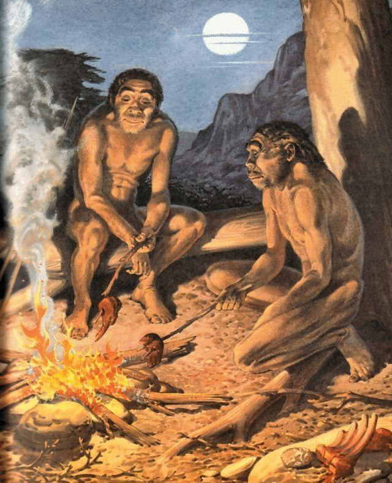
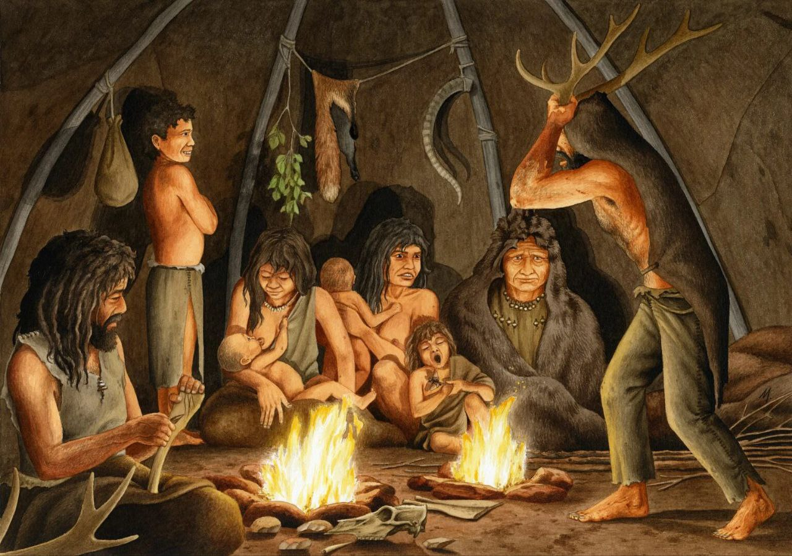

Первобытно-общинный строй
Первобытно-общинный строй, также общинно-родовой, — исторически первая в ряду общественно-экономических формаций, выделяемых в марксистской философии истории. Первобытное общество характеризуется минимальным (но постоянно повышающимся с течением времени) уровнем развития производительных сил, которому соответствуют производственные отношения так называемого первобытного коммунизма и бесклассовое общество. В современной теории государства и права первобытно-общинный строй рассматривается как форма негосударственной организации общества; этап, через который прошли все народы мира. Первобытная эпоха — самый ранний и наиболее продолжительный отрезок истории человечества, простирающийся «от выделения человека из мира животных до возникновения классового общества». В зависимости от локальных условий на смену первобытнообщинному строю приходит одна из классовых формаций — азиатский способ производства, рабовладельческий, феодальный и т. п. строй вплоть до социалистического. Некоторые исследователи также выделяют раннеклассовое общество.
Для основоположников исторической науки из Эллады и Древнего Рима первобытный строй выступал как объект непосредственного наблюдения за соседними народами «с высоты» более развитой цивилизации. Источники этой эпохи скудны и односторонни. Они отражают интерес античных авторов прежде всего к тем сторонам жизни соседних народов (традиции, верования, обычаи, поведенческие стереотипы и пр.), которые наиболее важны для оценки их потенциала в роли торговых партнёров, союзников и/или потенциальных противников. Первобытная периферия средневековой Европы описана современниками несколько обширнее, но и здесь нельзя сбрасывать со счетов, что и на Западе, и в Азии и на Дальнем Востоке эти племена на протяжении предыдущих веков находились в контакте с более развитыми соседями и таким образом испытывали воздействие с их стороны. Первобытный уклад жизни попал в поле зрения философов задолго до того, как мыслители Нового времени стали придавать этому объекту форму категории — элемента системного, научного знания. Одним из наиболее ранних образцов здесь является поэма Гесиода «Труды и дни» с её известной пятичленной историографической схемой: золотой век → век серебра → век меди → век героев → век железа. Как и в марксистской «пятичленке» (от коммунизма первобытного к коммунизму будущего), у Гесиода просматривается циклическое движение, возвращение к исходной точке. Разница в том, что у Гесиода спираль нисходящая (с потенциальной возможностью вернуться в «золотой век» через очищение от грехов прошлого), а в марксизме восходящая, в которой прежнее качество равенства и распределения по потребностям достигается при качественно и количественно более высоком уровне развития производительных сил.
О собирательстве («питаясь естественными кормами земли и случайными плодами деревьев») и «грубой и звериной жизни» писал Демокрит; от Дикеарха к Варрону и Титу Лукрецию Кару переходит гипотеза о развитии форм хозяйства от охоты и собирательства через скотоводство к земледелию. Лукреций, кроме того, излагает последовательность, близкую к современной археологической периодизации (каменный, бронзовый и железный века): «сначала люди использовали орудия из дерева и камня, затем открыли медь и только вслед за этим — железо». Развёртывая эту цепочку примеров, Ю. И. Семёнов выражает скептическое к ней отношение: «всё это были замечательные догадки». Эпоха Великих географических открытий дала европейцам шанс изучить в буквальном смысле нетронутый материал Нового Света. На этом этапе, собственно, и зарождается современная этнография (Б. де Саагуна), хотя первые миссионеры углубляются в быт туземных народов с целью переломить его, а не изучить для академической науки. После XVIII века в числе объектов этнографических наблюдений всё больше внимания начинают привлекать аспекты социальной организации первобытных обществ, семьи и брака.
Наконец, в XIX веке формируются научные школы (эволюционисты и диффузионисты) Льюис Морган и другие этнографы XIX века реконструировали доисторический быт по наблюдениям за индейцами, папуасами, пигмеями и другими туземными народами; развёртываются дискуссии о матриархате и патриархате. По этим объективным причинам этнографический материал преобладает и в «Происхождении семьи…». Однако главный вклад этого труда Энгельса в марксизм состоял не в презентации этнографических концепций, а в закладке метода изучения способа производства в единстве факторов производительных сил и производственных отношений. В этом свете определение родовой, эпизодически встречавшееся в довоенной литературе, лишь частично раскрывает сущностные черты этого строя.